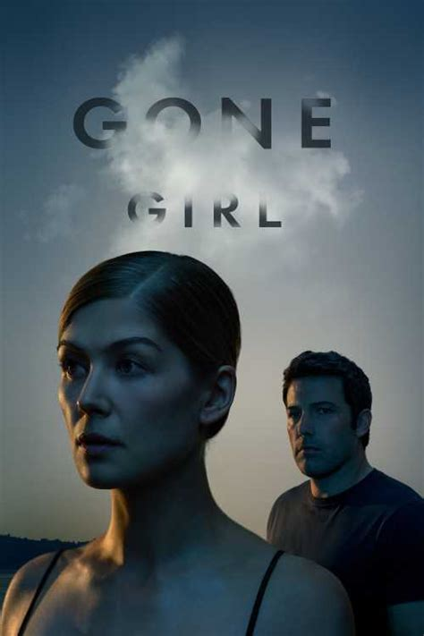

|
 |
Gone Girl (2014)Directed by David Fincher 149 min · Drama, Mystery, Thriller |
At a glance
| Official title | Gone Girl |
|---|---|
| Release date | 3 October 2014 (United States) |
| Release year | 2014 |
| Original language | English |
| Country of production | United States |
| Runtime | 149 minutes |
| Genre | Drama, Mystery, Thriller |
| Director | David Fincher |
| Screenwriter | Gillian Flynn (based on her novel) |
| Production companies | 20th Century Fox, Regency Enterprises, Pacific Standard, TSG Entertainment |
Plot synopsis
On the morning of his fifth wedding anniversary, a man reports his wife missing. As the investigation grows and media attention intensifies, the picture of the couple's marriage becomes increasingly complicated.
Main cast
- Ben Affleck
- Rosamund Pike
- Neil Patrick Harris
- Tyler Perry
- Carrie Coon
- Kim Dickens
Awards and nominations
- Rosamund Pike received an Academy Award nomination for Best Actress.
- Received Golden Globe nominations for Best Director, Best Actress in a Drama (Pike), Best Screenplay and Best Original Score.
Production facts
- Gillian Flynn adapted her own 2012 novel for the screenplay.
- The score is by Trent Reznor and Atticus Ross, their third collaboration with David Fincher.
- The film was shot digitally.
- Exterior scenes were filmed in Cape Girardeau, Missouri.